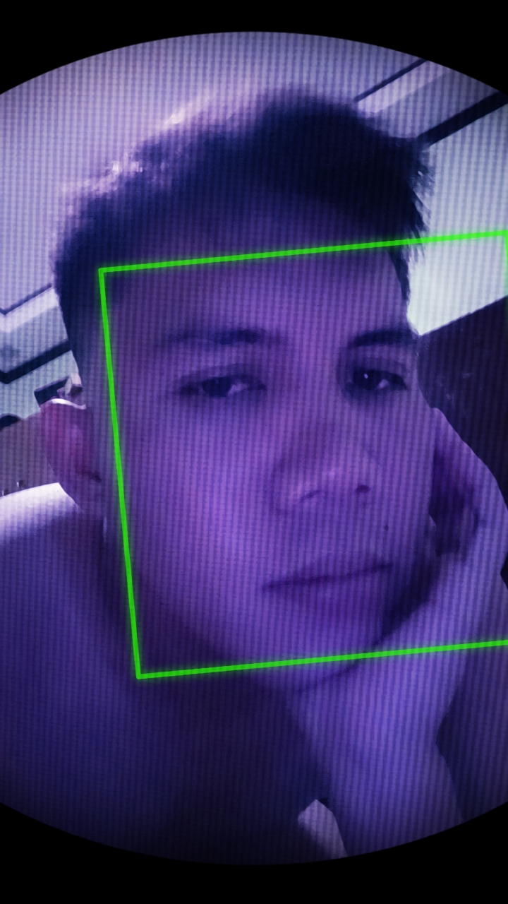
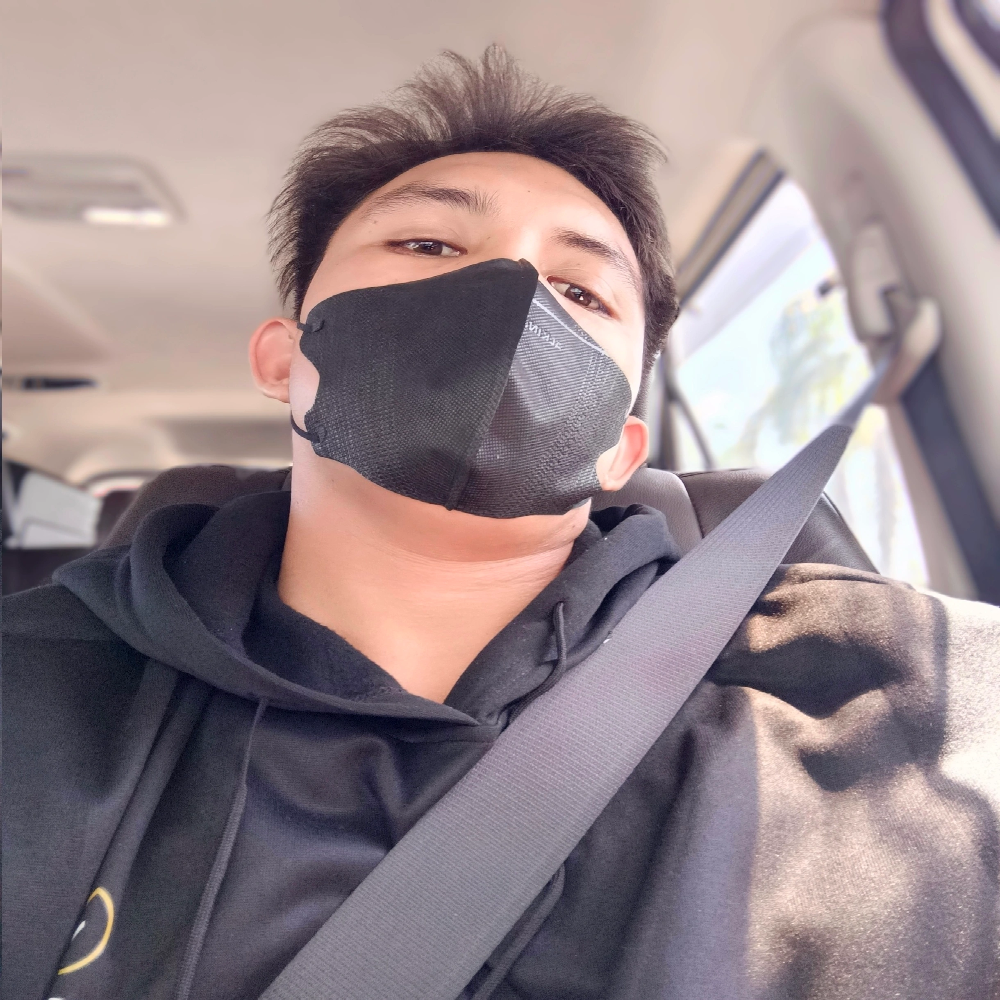

Vibe Coding & AI Implementation
Turning app ideas, workflows, and concepts into working web platforms and mobile tools through AI-assisted vibe coding and rapid iteration.
IT Graduate · Technical Support, Data Management & SEO Monitoring
An Information Technology graduate based in Iloilo City, Philippines. I specialize in desktop and technical support, data management, and SEO monitoring (Google Analytics), using AI vibe coding to rapidly build web systems and technical tools.
Remote Infrastructure & VA Setup
100% verified hardware and high-speed fiber internet setup for Virtual Assistant, Customer Support, and Remote Technical roles.
Processor: AMD Ryzen 5 5500U (6 Cores / 12 Threads @ 2.10 GHz – 4.0 GHz)
OS: Windows 11 Home 64-bit
High-capacity 3200 MT/s memory for heavy CRM multitasking, parallel browser sessions, & virtual tools.
Storage: 1.38 TB High-Speed Storage
High-speed fiber connection with 18 Mbps upload & 26ms low latency ping for seamless VoIP/calls and live support.
ISP: Smart Communications
FLAGSHIP SOFTWARE SHOWCASE
Custom Android kiosk application engineered for mobile device rental tracking, PIN access controls, First-Time Setup Wizard, and automated session timers.
Developed by Jolan Clark. A specialized Android kiosk shell designed for device rental management, automated countdown timers, PIN-secured admin settings, and app access restriction.
Developed by Jolan Clark
Please enter admin PIN to start a new session.
Configure initial settings & permissions.
Personal Snapshots
Personal photos, portraits, and daily snapshots of Jolan Clark Sorillo.


Curated Collection of Work Samples (A – Z)
A curated collection of 14+ live web applications, templates, and software utilities built for specific business and technical goals.
About Jolan Clark Sorillo
BS Information Technology graduate from Northern Iloilo State University (NISU) combining IT knowledge, customer service experience, SEO analytics, and AI vibe coding.
Turning app ideas, workflows, and concepts into working web platforms and mobile tools through AI-assisted vibe coding and rapid iteration.
Building clean, responsive web interfaces with HTML5, CSS3, JavaScript ES6+, glassmorphic design, and dynamic JSON fetching.
Tracking website search performance, traffic analytics, indexing, and keyword trends using Google Search Console and Google Analytics 4 (GA4).
Inbound customer communication, telecommunications account troubleshooting, CRM tools, and clear customer technical guidance at Transcom.
PC & mobile hardware troubleshooting, broadband network optimization, digital document archiving, and supply inventory tracking.
Iloilo City. Provided inbound technical support, billing inquiries, and account troubleshooting for telecommunications customers using internal CRM platforms.
Managed inventory tracking, document digitization, database entry, and administrative supply office operations.
Desktop/mobile hardware diagnostics, broadband network optimization, Search Console & Google Analytics monitoring, and web development.
Frequently Asked Questions
Common questions about Jolan Clark Sorillo, education, background, Vibe Coding, and remote setup.
Jolan Clark A. Sorillo (known as Larck) is a BS Information Technology graduate from Northern Iloilo State University (NISU), Vibe Coder, Virtual Assistant, and IT Specialist based in Iloilo City, Philippines. He views development and life as a vibrant, constantly shifting kaleidoscope of experiences—combining technical logic, continuous self-improvement, and creative execution.
Bachelor of Science in Information Technology (BS IT) Class of 2025 from NISU College of Information and Computing Studies (CICS), specializing in Web & Application Development. Awarded Student Researcher of the Year (2025) and Dean's Lister honors.
Vibe coding combines core IT domain knowledge and frontend web fundamentals with AI-driven prompt engineering. It enables rapid concept implementation, building functional web systems, custom logic, and mobile tools at accelerated speeds.
A 100% verified Dell Vostro 5515 Workstation powered by an AMD Ryzen 5 5500U processor (6 Cores / 12 Threads), 24 GB DDR4 RAM, 1.38 TB SSD storage, and 120+ Mbps Smart Fiber internet connection (26ms ping) for high-load CRM multitasking and live client support.
Playing competitive badminton (focusing on strategic agility and precision), gaming, and exploring culinary arts, maintaining a balanced and disciplined lifestyle alongside technical work.
You can connect directly via WhatsApp (+63 928 732 8109), Viber, Email (sorillojolanclark@gmail.com), or send a direct note using the contact form below.
Get In Touch
Need assistance with web development, vibe coding project execution, IT support, SEO analytics monitoring, or virtual assistant operations?